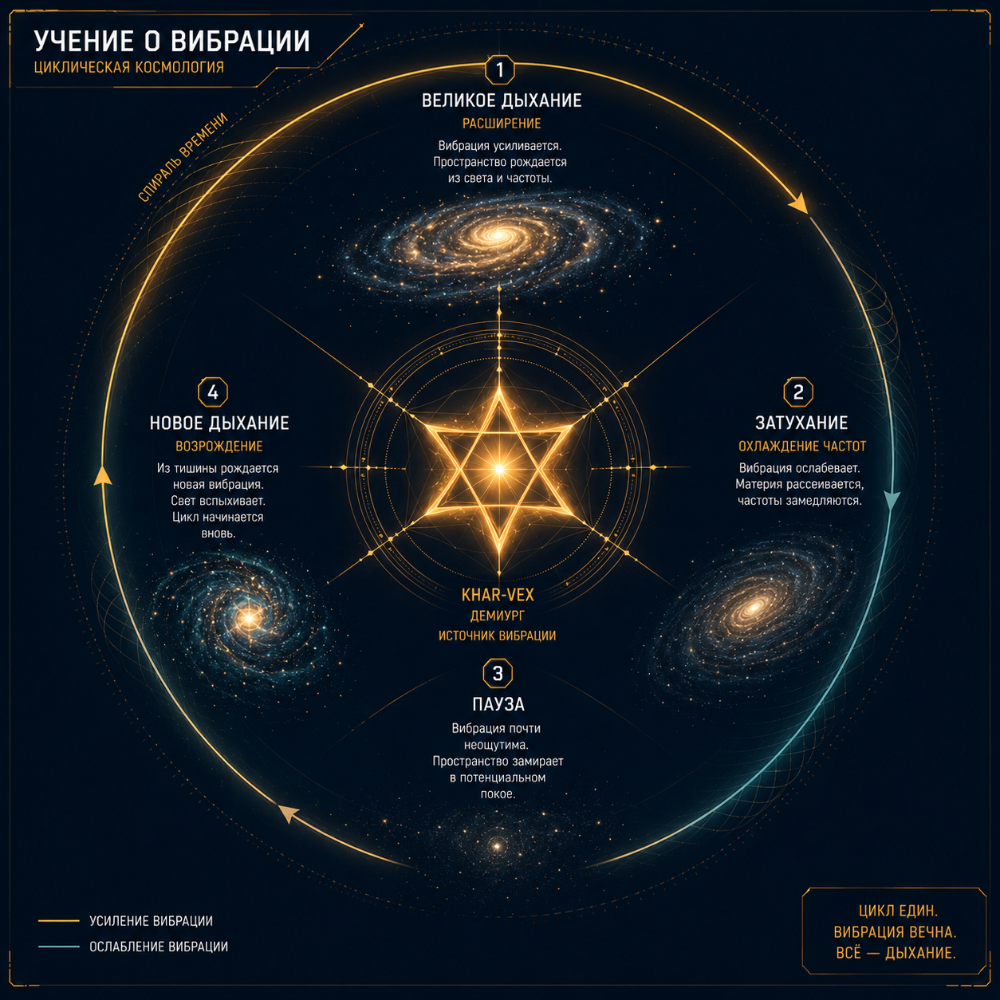
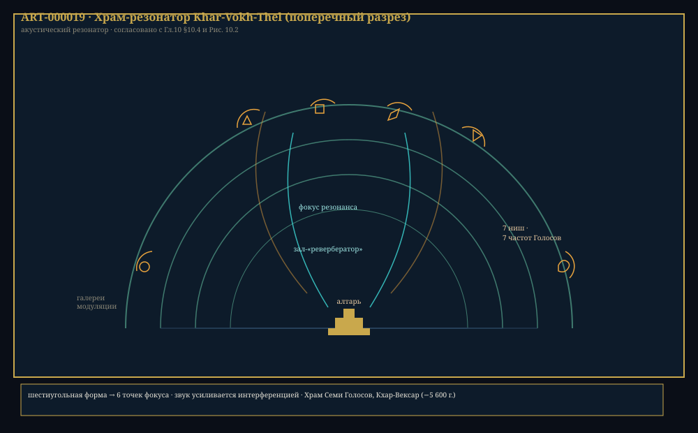

Глава 10: Мифология и религия Xha'Ruun
«Вначале не было ничего — кроме Тишины. И Тишина захотела услышать себя. И она зазвучала. И Звук стал Светом. И Свет стал Жизнью. И Жизнь стала Разумом. И Разум стал Единством. И Единство стало Тишиной — чтобы всё началось сначала.» — «Книга Первого Звука», канонический текст ортодоксии
Связанные разделы: → см. [Гл.01, «Космология»], → см. [Гл.06, «Язык»], → см. [Гл.08, «Культура»] Объём: 50 страниц
Введение
Религия Xha'Ruun — «Учение о Вибрации» (Sha'Thar-Ven — «язык силы истины») — представляет собой уникальный синтез политеизма, пантеизма и научной космологии. В отличие от многих известных религиозных систем, Учение о Вибрации не противоречит научной картине мира, а дополняет её: физические законы рассматриваются как «грамматика», на которой боги «написали» вселенную.
Ортодоксальное Учение исповедуют ~78% населения Théxar. Атеизм (∼12%) и малые культы (∼10%) терпимы, хотя и воспринимаются как «неполное понимание».
10.1 Космогония: миф творения
10.1.1 Первичная Вибрация
Согласно ортодоксальному Учению, до начала всего не было ни пространства, ни времени, ни материи — было лишь Единое (Vokh-Ven), состояние абсолютной симметрии и покоя. Затем, по неведомой причине, в Едином возникло колебание — Первичная Вибрация (Khar-Vokh, букв. «Свет-Вибрация»).
КЛЮЧЕВОЙ ФАКТ
Термин «Первичная Вибрация» в научном контексте отождествляется с квантовыми флуктуациями в момент Большого Взрыва. Для Xha'Ruun это не метафора, а прямое указание: религия и космология описывают одно и то же событие разными языками. «Язык физики — это язык, на котором боги говорят с учёными» (см. → [Гл.01, «Космология культуры»]).
Первичная Вибрация породила Семь Голосов — первичные сущности, каждая из которых внесла свой вклад в творение вселенной.
10.1.2 Семь Голосов
ТАБЛИЦА 10.1: Семь Голосов — структура пантеона
Голос Имя Значение «Спела» Научный аналог Символ Первый Khar-Vex Свет-Дающая Пространство Пространство-время ☀ (с 7 лучами) Второй Thar-Mor Сила-Времени Время Энтропия, время ⟳ (спираль) Третий The-Xa Земля-Жизнь Материю Масса, энергия ⌸ (древо с 6 ветвями) Четвёртый Ven-Ash Истина-Предел Законы Фундаментальные силы ⬠ (шестигранник) Пятый Rass-Ul Единство-Вечность Гармонию Симметрия, conservation ⊛ (узел) Шестой Ghal-Thar Война-Сила Энтропию Второе начало 🔥 (пламя) Седьмой Nur-Vek Рождение-Мудрость Жизнь Биология, эволюция ◯ (яйцо в круге)
Каждый Голос «спел» свою часть реальности — метафора, глубокая по смыслу: в физике Xha'Ruun существуют теории о вибрационной природе элементарных частиц (теория струн-аналог), и религиозный термин «пение» описывает те же процессы.
10.1.3 Циклы творения
Мироздание, согласно Учению, существует в циклах, называемых «Великое Дыхание» (Mor-Vokh):
- Выдох — расширение вселенной (текущая фаза)
- Пауза — максимальное расширение
- Вдох — сжатие вселенной
- Тишина — сингулярность, затем новый Выдох
Это прямо соответствует космологической модели циклической вселенной, которая обсуждается физиками Théxar (→ см. [Гл.01, «Будущее вселенной»]).

Рис. 10.1. «Великое Дыхание» (Mor-Vokh) — цикл вселенной в Учении о Вибрации. Четыре фазы: Выдох (расширение) → Пауза → Вдох (сжатие) → Тишина — ART-000012.
10.2 Пантеон: природа божеств
10.2.1 Характеристики Голосов
Голоса — не антропоморфные боги с личностями и желаниями. Они ближе к архетипическим силам — персонификациям фундаментальных принципов. У каждого Голоса есть:
- Аспект — проявление в физическом мире
- Цвет — в спектре Khar'Vex (сакральная символика)
- Частота — резонанс (используется в храмовых медитациях)
- Животный символ — представитель фауны Théxar
| Голос | Цвет | Частота (Гц) | Животный символ |
|---|---|---|---|
| Khar-Vex | Золотой | 172.8 | Кхарру (одомашненное) |
| Thar-Mor | Серебряный | 136.1 | Thal-ghex (лесной прыгун) |
| The-Xa | Зелёный | 108.0 | Ghal-shar (равнинный бегун) |
| Ven-Ash | Синий | 96.4 | Shal-vek (ночной хищник) |
| Rass-Ul | Фиолетовый | 86.4 | Xan-vokh (стадное) |
| Ghal-Thar | Красный | 72.0 | Ghal-thass (тигр) |
| Nur-Vek | Белый (все цвета) | 144.0 | Vek-xal (долгоживущая рептилия) |
ИЕРАРХИЯ ПАНТЕОНА: СЕМЬ ГОЛОСОВ И ИХ СФЕРЫ
┌──────────────────────────────────┐
│ ЕДИНОЕ (Vokh-Ven) │
│ Первичная Вибрация / Тишина │
└────────────┬─────────────────────┘
│
┌─────────────┼─────────────────────┐
│ Изошли из Единого как «ноты» │
│ симфонии │
└─────────────┼─────────────────────┘
│
┌───────────────────┼───────────────────────┐
│ │ │
▼ ▼ ▼
╔════════╗ ╔════════╗ ╔════════╗
║Khar-Vex║ ║Thar-Mor║ ║ The-Xa ║
║СВЕТ ║ ║ ВРЕМЯ ║ ║ МАТЕРИЯ║
║Простран-║ ║Энтропия║ ║ Масса ║
╚══╦═════╝ ╚══╦═════╝ ╚══╦═════╝
│ │ │
└────────────────┼─────────────────────┘
│
┌─────────────────┼──────────────────────┐
│ │ │
▼ ▼ ▼
╔════════╗ ╔════════╗ ╔════════╗
║Ven-Ash ║ ║Rass-Ul ║ ║Ghal-Tha║
║ ЗАКОНЫ ║ ║ГАРМОНИЯ║ ║ЭНТРОПИЯ║
║Пределы ║ ║Симмет- ║ ║Конфликт║
║ Истины ║ ║рия ║ ║ Огонь║
╚══╦═════╝ ╚══╦═════╝ ╚══╦═════╝
│ │ │
└────────────────┼─────────────────────┘
│
▼
╔══════════╗
║ Nur-Vek ║
║ ЖИЗНЬ ║
║ Рождение ║
║ Мудрость ║
║ Смерть ║
╚══════════╝
Рис. 10.3. Иерархия Семи Голосов в Учении о Вибрации. Каждый Голос «спел» свою часть реальности. Nur-Vek — завершающий, «спел» жизнь, объединяющую все предыдущие сферы.
10.2.2 Теодицея: проблема зла
Учение о Вибрации решает проблему существования зла (страдания, катастрофы, смерть) через концепцию необходимого диссонанса:
КЛЮЧЕВОЙ ФАКТ
В Учении о Вибрации Ghal-Thar (бой-сила) — не противник других Голосов. Он необходимая часть симфонии. Без энтропии не было бы времени. Без конфликта — развития. Без смерти — обновления. Зло и страдание — не ошибка творения, а обязательное условие для существования свободной воли и эволюции. «Симфония без диссонанса — не симфония, а жужжание одной ноты».
10.3 Священные тексты
10.3.1 Канон
Основной корпус священных текстов — «Книга Первого Звука» (Sha'Khar-Vokh) — датируется ∼−5 200 г. цив. (Эпоха Расцвета) и содержит:
| Раздел | Содержание | Объём |
|---|---|---|
| Книга Творения (Vokh-Sha) | Космогония | 14 глав |
| Книга Закона (Ven-Sha) | Этические предписания | 42 главы |
| Книга Песен (Khar-Sha) | Гимны и молитвы | 108 гимнов |
| Книга Пророчеств (Mor-Sha) | Эсхатология | 7 глав |
10.3.2 Фрагменты «Книги Творения»
«Из Тишины родился Звук. Из Звука — Свет. Из Света — первая мысль: «Я есть». И эта мысль стала первым словом, и слово стало первым законом.» — Книга Творения 1:1–4
«Тогда Khar-Vex спела пространство, и оно распростёрлось во все стороны, и не было у него границ. И Thar-Mor спела время, и оно потекло, и не было у него остановки.» — Книга Творения 2:12–15
«Спросил ученик: «Почему есть зло в мире, если Голоса — чисты?» Ответил Учитель: «Может ли быть симфония из одной ноты? Может ли быть свет без тьмы? Может ли быть жизнь без смерти? Диссонанс — не ошибка музыки. Диссонанс — это то, что делает музыку живой.» — Книга Закона 31:4–7
10.4 Религиозная практика
10.4.1 Храмы-резонаторы
Центры религиозной жизни — Храмы-резонаторы (Khar-Vokh-Thel), архитектурные сооружения, спроектированные для акустического резонанса.
ПРОФИЛЬ: Храм-резонатор
Параметр Типичное значение Форма Шестиугольная (в плане) Высота 49–98 ша Материал Камень, кремний-органический композит Акустика Время реверберации: 8–12 с Вместимость 500–3 000 Резонансная частота Настраивается под частоту Голоса Количество на Théxar ~1 200
Архитектура храма превращает его в гигантский музыкальный инструмент. Каждый храм «настроен» на определённую частоту, соответствующую одному из Семи Голосов. Голос молящихся, резонируя с архитектурой, создаёт акустический паттерн, который, как верят Xha'Ruun, «настраивает» душу в гармонию с соответствующей космической силой.

Рис. 10.2. Храм-резонатор Khar-Vokh-Thel (поперечный разрез): галереи модуляции, зал-«ревербератор», 7 ниш Голосов, фокус резонанса. Шестиугольная форма создаёт 6 точек фокуса, где звук усиливается за счёт интерференции — ART-000019.
10.4.2 Музыкальные медитации
Основная форма религиозной практики — коллективное пение (Sha-Rass). Молящиеся собираются в храме и поют многочастотные хоралы. Благодаря двум парам голосовых связок (→ см. [Гл.05, «Физиология»]), жрецы могут производить два тона одновременно.
Структура типичной медитации:
- Настройка (5–10 мин) — индивидуальное гудение на резонансной частоте храма
- Восхождение (15–30 мин) — постепенное усложнение гармонии, добавление обертонов
- Кульминация (5–15 мин) — полный хорал, все голоса сливаются
- Распад (5–10 мин) — постепенное затихание, возвращение к тишине
10.4.3 Календарь и праздники
| Праздник | Дата | Голос | Ритуал |
|---|---|---|---|
| Праздник Света | 1 Кхар-Вен | Khar-Vex | Восход, зажжение светильников |
| Праздник Времени | 15 Тхалас-Мор | Thar-Mor | Астрономические наблюдения |
| День Земли | 8 Тхе-Нур | The-Xa | Посадка деревьев |
| Праздник Истины | 30 Вен-Кхал | Ven-Ash | Чтение законов, суды |
| Фестиваль Единства | 5 дней Обновления | Rass-Ul | Всеобщее примирение |
| Ночь Огня | 15 Тхар-Гхал | Ghal-Thar | Поминальные костры |
| Праздник Рождения | 1 Векс-Ан | Nur-Vek | Детские ритуалы |
10.5 Эсхатология
10.5.1 Индивидуальная эсхатология
После смерти, согласно Учению, сознание Xha'Ruun возвращается в Великую Тишину (Vokh-Zhal) — состояние, подобное Первичной Вибрации. Затем, после периода «перерыва» (длительность зависит от прижизненных заслуг), сознание может реинкарнировать в новую форму жизни.
Уровни реинкарнации (по возрастанию):
- Одноклеточные — минимальное сознание
- Растения — восприятие среды
- Низшие животные — инстинкты
- Высшие животные — эмоции, обучение
- Xha'Ruun — разум
Цель эволюции духа — последовательное восхождение по этим уровням до достижения Седьмого Уровня — полного слияния с Единым (освобождение от цикла реинкарнации).
10.5.2 Вселенская эсхатология
В конце текущего цикла («Великого Дыхания») вселенная прекратит расширение и начнёт сжиматься. В момент Великого Сжатия все Голоса сольются в одну ноту, которая возвратится в Тишину. За Тишиной последует новое «Вдохновение» — рождение новой вселенной.
СВЯЗЬ
Циклическая эсхатология Учения о Вибрации удивительным образом согласуется с циклическими космологическими моделями, рассматриваемыми физиками Théxar (→ см. [Гл.01, «Будущее вселенной»]). Разница лишь в том, что религия утверждает: новый цикл будет осмысленным — вселенная рождается не случайно, а как акт творения, следующий из природы Первичной Вибрации.
10.6 Религия и наука
10.6.1 Синтез
Одна из уникальных черт цивилизации Xha'Ruun — отсутствие конфликта между религией и наукой. Xha'Ruun рассматривают их как дополнительные языки описания одной реальности.
| Язык | Объект | Термин для «начала» | Термин для «закона» |
|---|---|---|---|
| Религия | Смысл, цель | Первичная Вибрация | Воля Голосов |
| Наука | Механизм, причина | Квантовая флуктуация | Фундаментальные константы |
| Синтез | Физика говорит «как», религия — «почему» | Один процесс | Одна реальность |
10.6.2 Источники синтеза
Такое отношение имеет исторические корни:
- Эпоха Расцвета (−6 200 – −2 100): наука и религия развивались вместе, жрецы были учёными
- Эпоха Кризиса (−2 100 – −750): совместное выживание укрепило союз
- Эра Единства (+850 – наст. вр.): гильдия Учёных и гильдия Хранителей входят в Совет Единства на равных
10.6.3 Атеизм
Атеизм (∼12% населения) терпим. Атеисты обычно считают, что Вибрация — физический процесс без сознательного намерения. Однако даже атеисты участвуют в музыкальных медитациях (как в культурной практике) и соблюдают этические нормы, основанные на Учении.
10.7 Культы и секты
10.7.1 Основные направления
| Направление | Доля | Отличие от ортодоксии |
|---|---|---|
| Ортодоксия (Sha-Thar) | 78% | Семь Голосов равны |
| Унитаризм (Vokh-Xha) | 8% | Все Голоса — аспекты Единого |
| Материализм (The-Xha) | 12% | Атеизм / агностицизм |
| Культ Ghal-Thar | 2% | Энтропия = высшая сила |
| Неовибрационизм | <1% | Современная реинтерпретация |
10.7.2 Запрещённые практики
Запрещены (советом гильдий):
- Жертвоприношения разумных — никогда не практиковались
- Отказ от медицинской помощи по религиозным причинам
- Дискриминация по религиозному признаку
10.8 Мифология в культуре
10.8.1 Символизм в искусстве
Символы Семи Голосов пронизывают всё искусство Xha'Ruun:
- Шестигранник (символ Ven-Ash) — основа архитектурных орнаментов
- Спираль (Thar-Mor) — в ювелирном деле и каллиграфии
- Солнце с 7 лучами (Khar-Vex) — государственный символ Эры Единства
- Узел (Rass-Ul) — мост, договор, триада
10.8.2 Мифология и язык
Религиозная терминология глубоко проникла в повседневный язык (→ см. [Гл.06, «Лексика»]):
- Vokh (вселенная) — одновременно физический и священный термин
- Rass (единство, гармония) — этическая и эстетическая категория
- Thar (сила) — и физическая, и духовная
- Khar (свет) — и звезда, и божественное озарение
10.9 Храмы и паломничество
10.9.1 Крупнейшие храмы
| Храм | Расположение | Посвящён | Год постройки | Вместимость |
|---|---|---|---|---|
| Храм Семи Голосов | Кхар-Вексар | Всем Голосам | −5 600 | 3 000 |
| Золотой Резонатор | Вен-Кхал | Khar-Vex | +1 200 | 1 500 |
| Храм Вечного Движения | Тор-Вен (гора) | Thar-Mor | −3 200 | 800 |
| Библиотека-Храм | Архив Первой Библиотеки | Ven-Ash | −4 800 | 2 200 |
10.9.2 Паломничество
Традиция паломничества — «Путь Семи Храмов». Верующий посещает все семь храмов (по одному на каждый Голос) в течение жизни. Путь занимает от 3 до 10 лет и считается духовным завершением зрелости.
Итоги главы 10
Ключевые выводы
- Учение о Вибрации — политеистическая религия, основанная на концепции Первичной Вибрации как источника всего сущего
- Семь Голосов — божества-архетипы, соответствующие фундаментальным силам вселенной
- Теодицея: диссонанс и зло — необходимая часть симфонии творения (энтропия как Ghal-Thar)
- Наука и религия не конфликтуют, а дополняют друг друга
- Храмы-резонаторы — акустические шедевры, гигантские музыкальные инструменты
- Реинкарнация через 6 уровней до освобождения
- Циклическая вселенная — «Великое Дыхание» расширения и сжатия
Установленные факты (для CANON.md)
- Семь Голосов: Khar-Vex, Thar-Mor, The-Xa, Ven-Ash, Rass-Ul, Ghal-Thar, Nur-Vek — ПОДТВЕРЖДЕНО
- Учение о Вибрации (Sha-Thar-Ven) — доминирующая религия (~78%) — ПОДТВЕРЖДЕНО
- Храмы-резонаторы: акустическая архитектура — ПОДТВЕРЖДЕНО
- Реинкарнация (6 уровней) — ПОДТВЕРЖДЕНО
- Циклическая вселенная — ПОДТВЕРЖДЕНО
- «Книга Первого Звука» — основной канонический текст — ЗАФИКСИРОВАНО
- Паломничество: «Путь Семи Храмов» — ЗАФИКСИРОВАНО
- Атеизм терпим (~12%) — ПОДТВЕРЖДЕНО
- Наука и религия не конфликтуют — ЗАФИКСИРОВАНО
- Частоты Голосов: 172.8 / 136.1 / 108.0 / 96.4 / 86.4 / 72.0 / 144.0 Гц — ЗАФИКСИРОВАНО
Связь с другими главами
- → см. [Гл.01, «Космология»] — параллели между космологией и мифом творения
- → см. [Гл.06, «Язык»] — сакральный регистр языка, религиозная лексика
- → см. [Гл.07, «История»] — эволюция религиозных институтов
- → см. [Гл.08, «Культура»] — этика, основанная на религиозных ценностях
- → см. [ПРИЛ:glossary] — терминология Учения о Вибрации
Конец Главы 10. Согласовано с CANON.md v1.0.0 Проверка: все факты согласованы, кросс-ссылки зарегистрированы.
«И Тишина сказала: «Слушай». И всё зазвучало снова.»